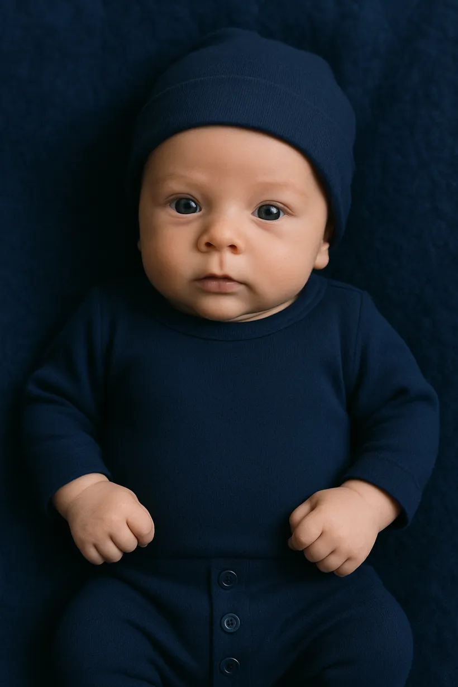
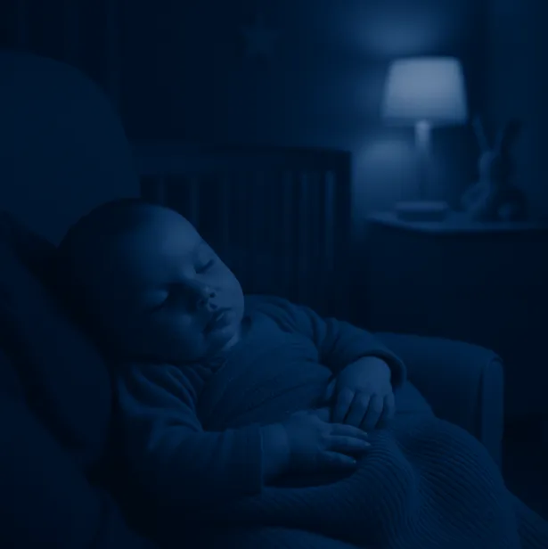
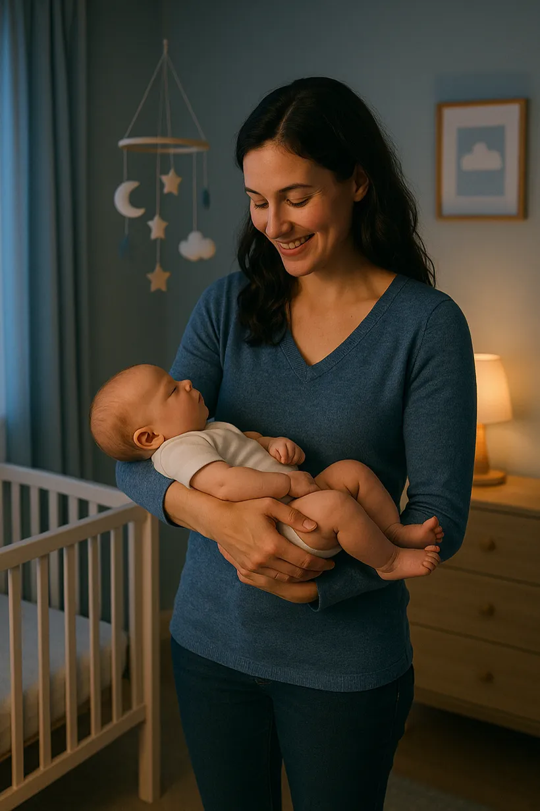
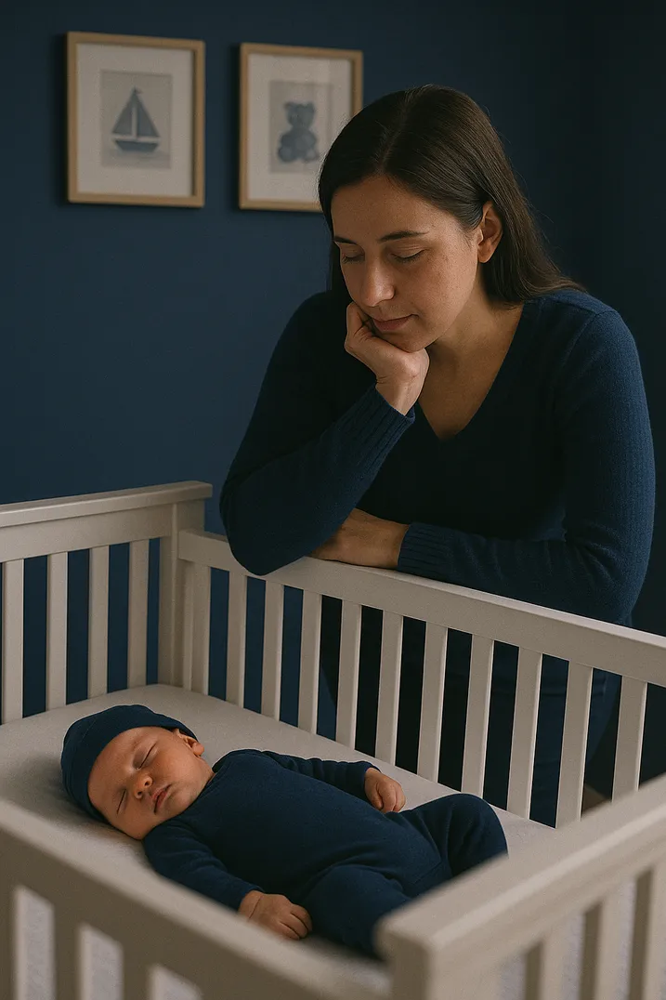

E-book gratuito
O que ninguém te contou sobre o sono do bebê no berço
Conheça os 5 principais motivos(e o que fazer em cada um deles)
 Por Dayane Dos AnjosConsultora de sono
Por Dayane Dos AnjosConsultora de sono
Conheça os 5 principais motivos(e o que fazer em cada um deles)
Por Dayane Dos AnjosConsultora de sono
Me chamo Dayane Dos Anjos. Sou mãe, consultora de sono, amamentação e cuidados com o bebê.
Seja muito bem-vinda a este e-book, criado com muito carinho para te ajudar a entender por que o seu bebê não está dormindo bem no berço e, principalmente, como mudar isso de forma gentil e eficaz.
Vamos começar? ↓
Muita gente acredita que, com o tempo, o bebê vai começar a dormir melhor sozinho. Mas a verdade é que o sono do bebê é uma habilidade que se aprende.

O bebê aprende a dormir no berço quando a família ensina. Não depende de sorte, idade ou acaso. Quando ele aprende a adormecer e a voltar a dormir sozinho, sem precisar de ajuda a cada despertar, a rotina muda completamente.
Sabe aquele momento em que o bebê está claramente exausto, mas parece resistir ao sono?
Ele chora, se irrita, e nada parece funcionar. Não é birra nem vontade de ficar acordado. É apenas cansaço acumulado.
O bebê não sabe o que fazer com tanto sono. E é por isso que ele precisa da nossa ajuda para chegar ao descanso.
Quando a família aprende a identificar os sinais e montar uma rotina adequada, tudo muda.
Quer ajuda para montar essa rotina?
No final deste e-book eu te apresento o meu Método de Sono, que além de ensinar o bebê a dormir bem e no berço, também te ajuda a ajustar a rotina.
QUERO CONHECERMuitas mães pensam que o desconforto é o motivo do bebê não dormir no berço. Mas se ele dorme bem no colo, mesmo em dias de cólica, isso mostra que o problema não está no desconforto, e sim na forma como ele adormece.
Com algumas estratégias, mesmo bebês com desconfortos podem dormir bem no berço, com tranquilidade.

Quando a família entende os sinais de cansaço e organiza uma rotina que respeita o tempo do bebê, essa luta contra o sono diminui, e o adormecer se torna mais leve.
Mas se o bebê só consegue relaxar e dormir no colo, isso pode indicar uma associação negativa que precisa ser transformada.
No próximo tópico, eu te explico como isso acontece, e como ajudar o seu bebê a dormir bem, mesmo longe dos braços. ↓
Por mais gostoso que seja ter o bebê no colo, chega uma hora em que todos estão exaustos.

O problema não é o colo, mas sim o hábito de adormecer apenas nele. Isso faz com que o bebê não consiga voltar a dormir sozinho, e precise ser ninado a cada despertar.
Ensinar o bebê a dormir no próprio espaço, com carinho e segurança, é um presente para ele e para você. E o melhor: você não precisa deixar o bebê chorando para isso acontecer.
O bebê dorme profundamente no colo, mas basta encostar no berço para ele acordar? Parece até que o berço tem espinhos, né?

Mas calma: isso tem explicação. O bebê se sente seguro e acolhido no colo, como se estivesse sendo abraçado. Já o berço é espaçoso, frio e diferente do corpo da mãe.
Essa mudança de ambiente causa estranhamento. Mas com uma boa transição, ele aprende a se sentir seguro no berço também.
Se eu pudesse resumir, diria que os dois grandes fatores são: falta de rotina e associações negativas de sono.
Quando o bebê aprende a dormir de uma forma que não consegue repetir sozinho, ele depende de ajuda a cada vez que acorda. Isso gera cansaço, frustração e noites picadas.
Agora que você entende o que pode estar por trás das noites mal dormidas, é hora de mudar a estratégia.
Com amor, paciência e orientação, você pode ensinar o seu bebê a dormir bem no berço, sem choro, sem traumas e no tempo dele. E eu posso te ajudar com isso.
Ficar pegando e soltando o bebê no berço, várias vezes... só deixa vocês mais cansados, frustrados e o bebê ainda mais irritado.
Você não precisa fazer seu bebê chorar para dormir bem. Existe um jeito leve, gentil e eficaz, com segurança, acolhimento e sem traumas.
Você já sabe por que o seu bebê pode não estar dormindo bem no berço. O próximo passo é aprender como mudar isso com leveza e acolhimento, com o Dream Baby!
Você está fazendo um trabalho incrível, mesmo nos dias mais desafiadores. Você não precisa passar por isso sozinha. Se precisar de ajuda, estou aqui para te acolher e guiar.
Vamos juntas?
QUERO MEU BEBÊ DORMINDO NO BERÇO!